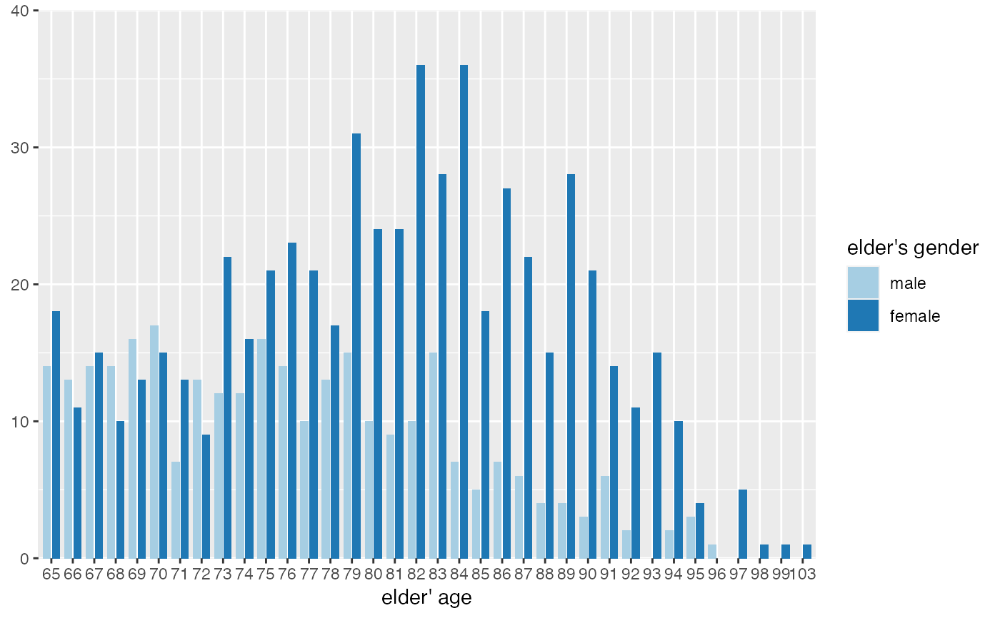
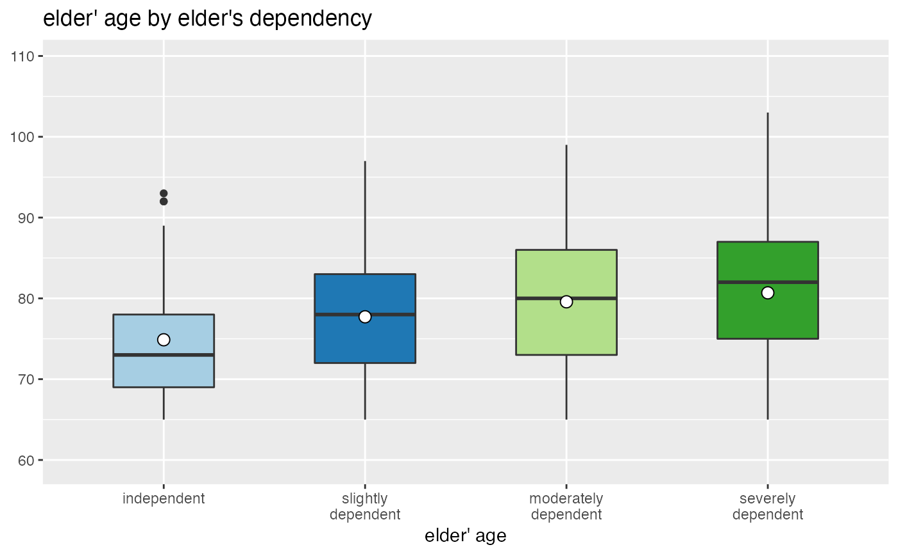
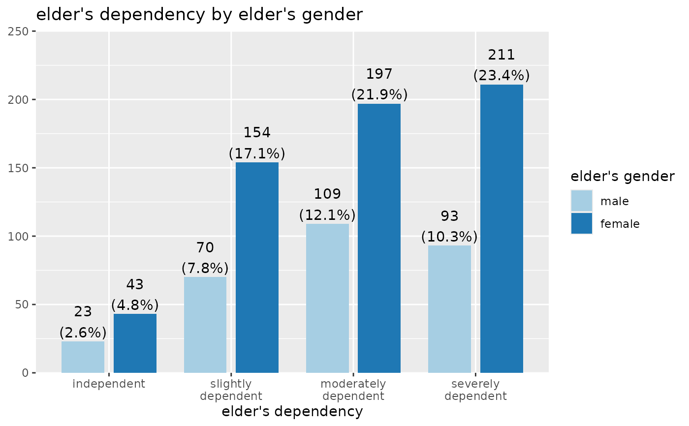
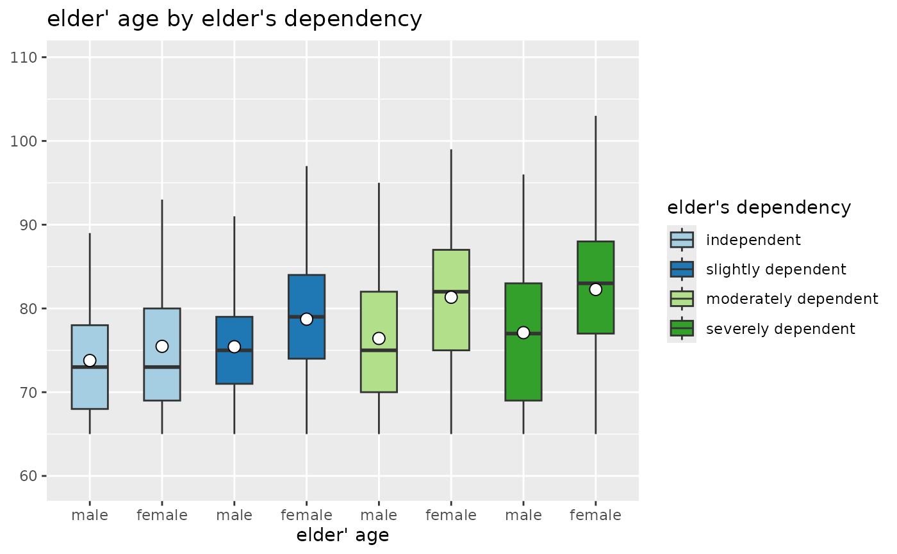
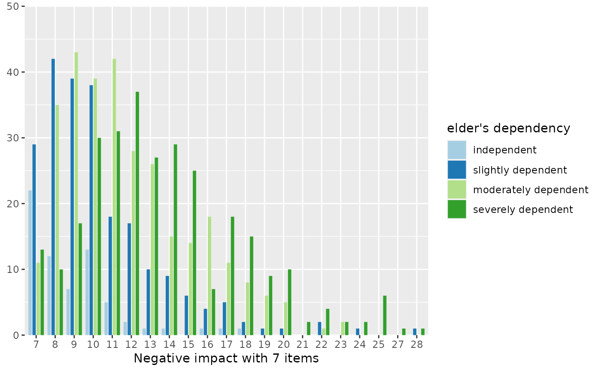
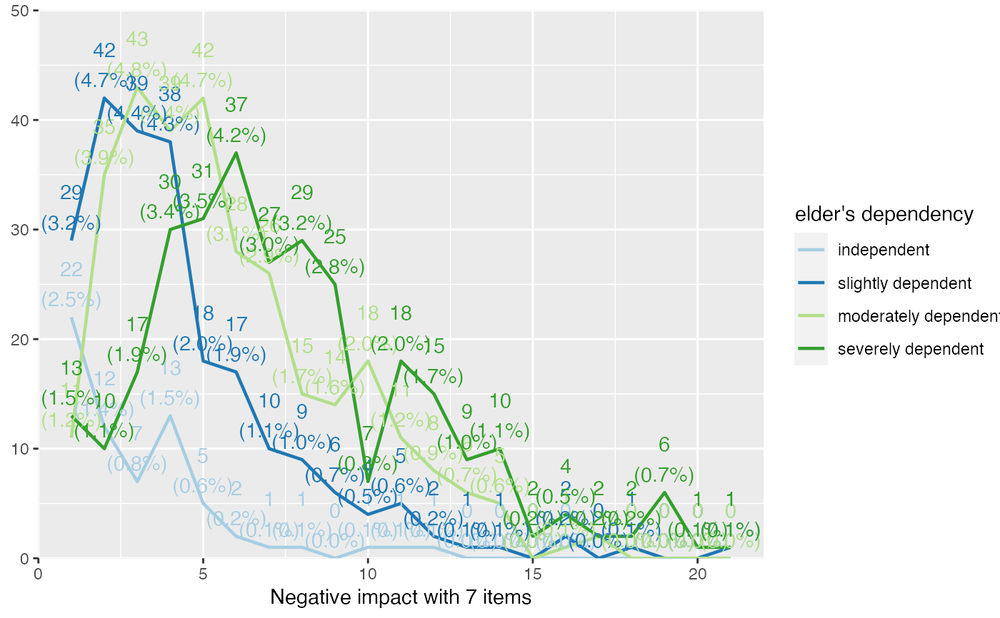
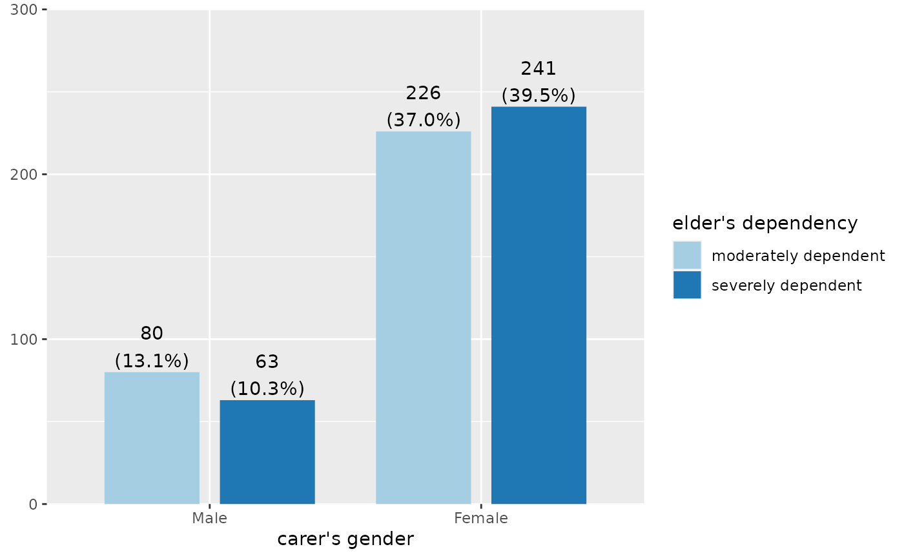
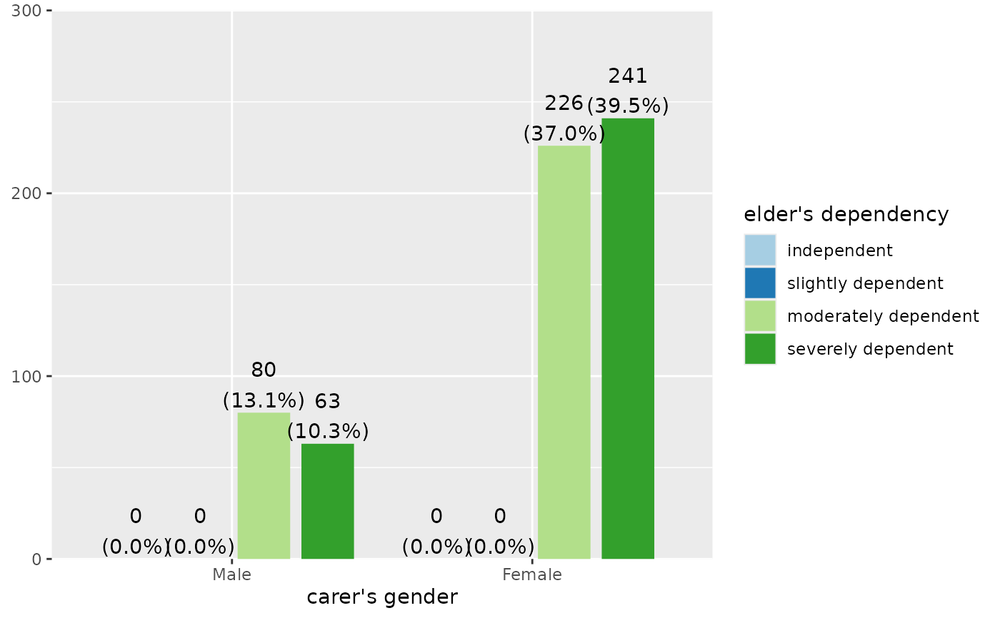

Plot grouped or stacked frequencies of variables as bar/dot, box or violin plots, or line plot.
Usage
plot_grpfrq(
var.cnt,
var.grp,
type = c("bar", "dot", "line", "boxplot", "violin"),
bar.pos = c("dodge", "stack"),
weight.by = NULL,
intr.var = NULL,
title = "",
title.wtd.suffix = NULL,
legend.title = NULL,
axis.titles = NULL,
axis.labels = NULL,
legend.labels = NULL,
intr.var.labels = NULL,
wrap.title = 50,
wrap.labels = 15,
wrap.legend.title = 20,
wrap.legend.labels = 20,
geom.size = NULL,
geom.spacing = 0.15,
geom.colors = "Paired",
show.values = TRUE,
show.n = TRUE,
show.prc = TRUE,
show.axis.values = TRUE,
show.ci = FALSE,
show.grpcnt = FALSE,
show.legend = TRUE,
show.na = FALSE,
show.summary = FALSE,
drop.empty = TRUE,
auto.group = NULL,
ylim = NULL,
grid.breaks = NULL,
expand.grid = FALSE,
inner.box.width = 0.15,
inner.box.dotsize = 3,
smooth.lines = FALSE,
emph.dots = TRUE,
summary.pos = "r",
facet.grid = FALSE,
coord.flip = FALSE,
y.offset = NULL,
vjust = "bottom",
hjust = "center"
)Arguments
- var.cnt
Vector of counts, for which frequencies or means will be plotted or printed.
- var.grp
Factor with the cross-classifying variable, where
var.cntis grouped into the categories represented byvar.grp.- type
Specifies the plot type. May be abbreviated.
"bar"for simple bars (default)
"dot"for a dot plot
"histogram"for a histogram (does not apply to grouped frequencies)
"line"for a line-styled histogram with filled area
"density"for a density plot (does not apply to grouped frequencies)
"boxplot"for box plot
"violin"for violin plots
- bar.pos
Indicates whether bars should be positioned side-by-side (default), or stacked (
bar.pos = "stack"). May be abbreviated.- weight.by
Vector of weights that will be applied to weight all cases. Must be a vector of same length as the input vector. Default is
NULL, so no weights are used.- intr.var
An interaction variable which can be used for box plots. Divides each category indicated by
var.grpinto the factors ofintr.var, so that each category ofvar.grpis subgrouped intointr.var's categories. Only applies whentype = "boxplot"ortype = "violin".- title
character vector, used as plot title. Depending on plot type and function, will be set automatically. If
title = "", no title is printed. For effect-plots, may also be a character vector of length > 1, to define titles for each sub-plot or facet.- title.wtd.suffix
Suffix (as string) for the title, if
weight.byis specified, e.g.title.wtd.suffix=" (weighted)". Default isNULL, so title will not have a suffix when cases are weighted.- legend.title
character vector, used as title for the plot legend.
- axis.titles
character vector of length one or two, defining the title(s) for the x-axis and y-axis.
- axis.labels
character vector with labels used as axis labels. Optional argument, since in most cases, axis labels are set automatically.
- legend.labels
character vector with labels for the guide/legend.
- intr.var.labels
a character vector with labels for the x-axis breaks when having interaction variables included. These labels replace the
axis.labels. Only applies, when using box or violin plots (i.e.type = "boxplot"or"violin") andintr.varis notNULL.- wrap.title
numeric, determines how many chars of the plot title are displayed in one line and when a line break is inserted.
- wrap.labels
numeric, determines how many chars of the value, variable or axis labels are displayed in one line and when a line break is inserted.
- wrap.legend.title
numeric, determines how many chars of the legend's title are displayed in one line and when a line break is inserted.
- wrap.legend.labels
numeric, determines how many chars of the legend labels are displayed in one line and when a line break is inserted.
- geom.size
size resp. width of the geoms (bar width, line thickness or point size, depending on plot type and function). Note that bar and bin widths mostly need smaller values than dot sizes.
- geom.spacing
the spacing between geoms (i.e. bar spacing)
- geom.colors
user defined color for geoms. See 'Details' in
plot_grpfrq.- show.values
Logical, whether values should be plotted or not.
- show.n
logical, if
TRUE, adds total number of cases for each group or category to the labels.- show.prc
logical, if
TRUE(default), percentage values are plotted to each bar IfFALSE, percentage values are removed.- show.axis.values
logical, whether category, count or percentage values for the axis should be printed or not.
- show.ci
Logical, if
TRUE), adds notches to the box plot, which are used to compare groups; if the notches of two boxes do not overlap, medians are considered to be significantly different.- show.grpcnt
logical, if
TRUE, the count within each group is added to the category labels (e.g."Cat 1 (n=87)"). Default value isFALSE.- show.legend
logical, if
TRUE, and depending on plot type and function, a legend is added to the plot.- show.na
logical, if
TRUE,NA's (missing values) are added to the output.- show.summary
logical, if
TRUE(default), a summary with chi-squared statistics (seechisq.test), Cramer's V or Phi-value etc. is shown. If a cell contains expected values lower than five (or lower than 10 if df is 1), the Fisher's exact test (seefisher.test) is computed instead of chi-squared test. If the table's matrix is larger than 2x2, Fisher's exact test with Monte Carlo simulation is computed.- drop.empty
Logical, if
TRUEand the variable's values are labeled, values / factor levels with no occurrence in the data are omitted from the output. IfFALSE, labeled values that have no observations are still printed in the table (with frequency0).- auto.group
numeric value, indicating the minimum amount of unique values in the count variable, at which automatic grouping into smaller units is done (see
group_var). Default value forauto.groupisNULL, i.e. auto-grouping is off. Seegroup_varfor examples on grouping.- ylim
numeric vector of length two, defining lower and upper axis limits of the y scale. By default, this argument is set to
NULL, i.e. the y-axis fits to the required range of the data.- grid.breaks
numeric; sets the distance between breaks for the axis, i.e. at every
grid.breaks'th position a major grid is being printed.- expand.grid
logical, if
TRUE, the plot grid is expanded, i.e. there is a small margin between axes and plotting region. Default isFALSE.- inner.box.width
width of the inner box plot that is plotted inside of violin plots. Only applies if
type = "violin". Default value is 0.15- inner.box.dotsize
size of mean dot insie a violin or box plot. Applies only when
type = "violin"or"boxplot".- smooth.lines
prints a smooth line curve. Only applies, when argument
type = "line".- emph.dots
logical, if
TRUE, the groups of dots in a dot-plot are highlighted with a shaded rectangle.- summary.pos
position of the model summary which is printed when
show.summaryisTRUE. Default is"r", i.e. it's printed to the upper right corner. Use"l"for upper left corner.- facet.grid
TRUEto arrange the lay out of of multiple plots in a grid of an integrated single plot. This argument callsfacet_wraporfacet_gridto arrange plots. Useplot_gridto plot multiple plot-objects as an arranged grid withgrid.arrange.- coord.flip
logical, if
TRUE, the x and y axis are swapped.- y.offset
numeric, offset for text labels when their alignment is adjusted to the top/bottom of the geom (see
hjustandvjust).- vjust
character vector, indicating the vertical position of value labels. Allowed are same values as for
vjustaesthetics fromggplot2: "left", "center", "right", "bottom", "middle", "top" and new options like "inward" and "outward", which align text towards and away from the center of the plot respectively.- hjust
character vector, indicating the horizontal position of value labels. Allowed are same values as for
vjustaesthetics fromggplot2: "left", "center", "right", "bottom", "middle", "top" and new options like "inward" and "outward", which align text towards and away from the center of the plot respectively.
Details
geom.colors may be a character vector of color values
in hex-format, valid color value names (see demo("colors") or
a name of a color brewer palette.
Following options are valid for the geom.colors argument:
If not specified, a default color brewer palette will be used, which is suitable for the plot style (i.e. diverging for likert scales, qualitative for grouped bars etc.).
If
"gs", a greyscale will be used.If
"bw", and plot-type is a line-plot, the plot is black/white and uses different line types to distinguish groups (see this package-vignette).If
geom.colorsis any valid color brewer palette name, the related palette will be used. UseRColorBrewer::display.brewer.all()to view all available palette names.Else specify own color values or names as vector (e.g.
geom.colors = c("#f00000", "#00ff00")).
Examples
data(efc)
plot_grpfrq(efc$e17age, efc$e16sex, show.values = FALSE)

# boxplot
plot_grpfrq(efc$e17age, efc$e42dep, type = "box")
#> Warning: Solution may be nonunique
#> Warning: Solution may be nonunique
#> Warning: Solution may be nonunique
#> Warning: Solution may be nonunique
#> Warning: Solution may be nonunique
#> Warning: Solution may be nonunique

# grouped bars
plot_grpfrq(efc$e42dep, efc$e16sex, title = NULL)

# box plots with interaction variable
plot_grpfrq(efc$e17age, efc$e42dep, intr.var = efc$e16sex, type = "box")
#> Warning: Solution may be nonunique
#> Warning: Solution may be nonunique
#> Warning: Solution may be nonunique

# Grouped bar plot
plot_grpfrq(efc$neg_c_7, efc$e42dep, show.values = FALSE)

# same data as line plot
plot_grpfrq(efc$neg_c_7, efc$e42dep, type = "line")

# show ony categories where we have data (i.e. drop zero-counts)
library(dplyr)
efc <- dplyr::filter(efc, e42dep %in% c(3,4))
plot_grpfrq(efc$c161sex, efc$e42dep, drop.empty = TRUE)

# show all categories, even if not in data
plot_grpfrq(efc$c161sex, efc$e42dep, drop.empty = FALSE)
